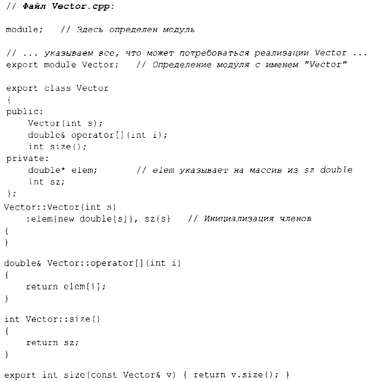
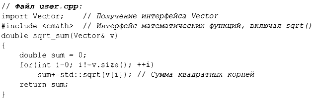

⇐3.2 Раздельная компиляция Содержание 3.4 Пространства имен⇒
Использование директивы включения файлов #include имеет долгую историю, чревато ошибками и представляет собой довольно дорогостоящий способ составления программ из частей. Если вы примените директиву #include header.h в 101 единице трансляции, текст header.h будет обработан компилятором 101 раз. Если вы включаете #include headerl.h до header2.h, то объявления и макросы в headerl. h могут влиять на смысл кода в header2. h. Если же вы включаете #include header2.h до header1.h, то уже header2.h может влиять на код в headerl.h. Очевидно, что это решение далеко от идеального и на самом деле является основным источником стоимости компиляции и ошибок с 1972 года, когда этот механизм был впервые введен в С.
И вот, наконец, мы надеемся получить лучший способ выражения физических модулей на С++. Возможность языка программирования, именуемая модулями, пока еще не является частью стандарта ISO С++, но уже входит в техническую спецификацию ISO [34]. Имеются готовые реализации, и поэтому я рискую рекомендовать модули в этой книге, несмотря на то что, вероятнее всего, детали этой возможности изменятся, и может пройти несколько лет до того, как каждый сможет использовать ее в своем производственном коде. Старый код (имеется в виду код с #include) может "жить" еще в течение очень долгого времени, поскольку соответствующее обновление может быть очень дорогостоящим и трудоемким.
Рассмотрим, как выразить пример с Vector и sqrt sum () из §3.2 с использованием модулей:
Здесь определен модуль с именем Vector, который экспортирует класс Vector, все его функции-члены, а также свободную функцию size ().
Способ применения модулей состоит в их импорте при необходимости. Например:
Я мог бы импортировать и математические функции стандартной библиотеки, но я использовал старомодный #include, чтобы показать, что вы можете смешивать старые и новые директивы в одной программе. Такое смешение необходимо для постепенного перевода старого кода с #include на import.
Различие между заголовочными файлами и модулями не просто синтаксическое.
Влияние модулей на надежность и производительность во время компиляции может быть просто захватывающим.